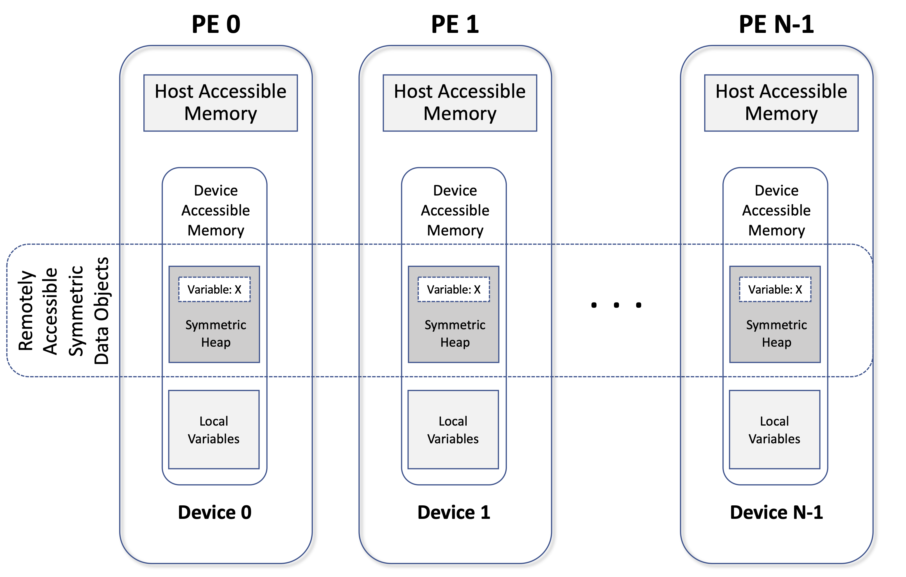

Memory Model#
{kind=link}
An Intel® SHMEM program consists of data objects that are private to
each PE and data objects that are remotely accessible by all PEs.
Private data objects are stored in the local host memory of a given PE or in
the device memory of the device local to the PE, and private objects cannot be
accessed by other PEs via ishmem routines.
Private data objects on the host follow the memory model of C/C++ and private
data objects on the device follow the SYCL device memory model (see SYCL
device memory model).
Remotely accessible objects, however, can be accessed by remote PEs using
ishmem routines within SYCL device kernels.
Remotely accessible data objects are called Symmetric Data Objects.
Each symmetric data object has a corresponding object with the same name, type,
and size on all PEs where that object is accessible via the Intel® SHMEM API.
In Intel® SHMEM, global and static C++ variables are remotely
accessible only by using ishmem routines that are callable from the
host (this kind of data object must not be defined in a dynamic shared
object).
On the other hand, C++ data allocated by the memory management
routines (Section Memory Management) are remotely
accessible by using ishmem APIs that are callable from either the
host or the device.
The ishmem dynamic memory allocation routines (e.g., ishmem_malloc)
allow collective allocation of Symmetric Data Objects on a special memory
region called the Symmetric Heap.
The Symmetric Heap is created during the execution of a program at a memory
location determined by the implementation.
The Symmetric Heap may reside in different memory regions on different PEs.
The memory model diagram shows an example of the
Intel® SHMEM memory layout, illustrating the location of remotely
accessible symmetric objects and private data objects.
Pointers to Symmetric Objects#
Symmetric data objects are referenced in ishmem routines through the
local pointer to the desired remotely accessible object.
The address contained in this pointer is referred to as a symmetric address.
Every symmetric address is also a local address that is valid for direct
memory access; however, not all local addresses are symmetric.
Manipulation of symmetric addresses passed to ishmem routines - including
pointer arithmetic, array indexing, and access of structure or union members -
are permitted as long as the resulting local pointer remains within the same
symmetric allocation or object.
Symmetric addresses are only valid at the PE where they were generated; using a
symmetric address generated by a different PE for direct memory access or as an
argument to a ishmem routine results in undefined behavior.
Symmetric addresses provided to typed ishmem interfaces must be naturally
aligned based on their type and any requirements of the underlying
architecture.
The DPC++/SYCL programming model supports Unified Shared Memory between host
and GPU.
In that model, memory can be host, device, or shared.
In Intel® SHMEM, the symmetric heap is in device memory and is not accessible
from the host by loads and stores, but SYCL routines such as
sycl::queue::memcpy() may be used.
SYCL host Memory may be allocated by sycl::malloc_host() and is accessible
using loads and stores in both host and device kernel code.
SYCL kernels generally do not have access to host global and static objects.
Intel® SHMEM augments the DPC++/SYCL memory model to some degree, in that host-initiated operations can reference objects in the symmetric heap on the same or other PEs, even though device memory is not accessible by loads and stores. Host-initiated operations can also refer to global and static objects on the same or other PEs. Device-initiated operations may only reference objects in the symmetric heap.
The ishmem_ptr routine allows the programmer to obtain a local pointer to a
remotely accessible object at a specified PE if load-store access is possible.
For Intel® \(\text{X}^e\) Link fabric connected GPUs, ishmem_ptr may
return a valid address for direct access to symmetric heap objects that are
accessible via the \(\text{X}^e\) Link fabric.
ishmem_ptr called on the host will generally not return a valid address
for a symmetric heap object even on the same PE.
A pointer returned by ishmem_ptr is valid for direct memory access;
however,
providing this address as an argument of an ishmem routine that requires a
symmetric address results in undefined behavior.
Atomicity Guarantees#
Intel® SHMEM contains a number of routines that perform atomic operations on symmetric data objects, which are defined in the Atomic Memory Operations section. The atomic routines guarantee that concurrent accesses by any of these routines to the same location, using the same datatype (specified in the Standard AMO Types and Extended AMO Types tables) will be exclusive. Exclusivity is also guaranteed when the target PE performs a wait or test operation on the same location and with the same datatype as one or more atomic operations.
Intel® SHMEM atomic operations do not guarantee exclusivity in the following scenarios, all of which result in undefined behavior.
#. When concurrent accesses to the same location are performed using ishmem
atomic routines using different datatypes.
#. When atomic and non-atomic ishmem routines are used to access the same
location concurrently.
#. When ishmem atomic routines and non-ishmem operations (e.g., load,
store, or other atomic operations) are used to access the same location
concurrently.